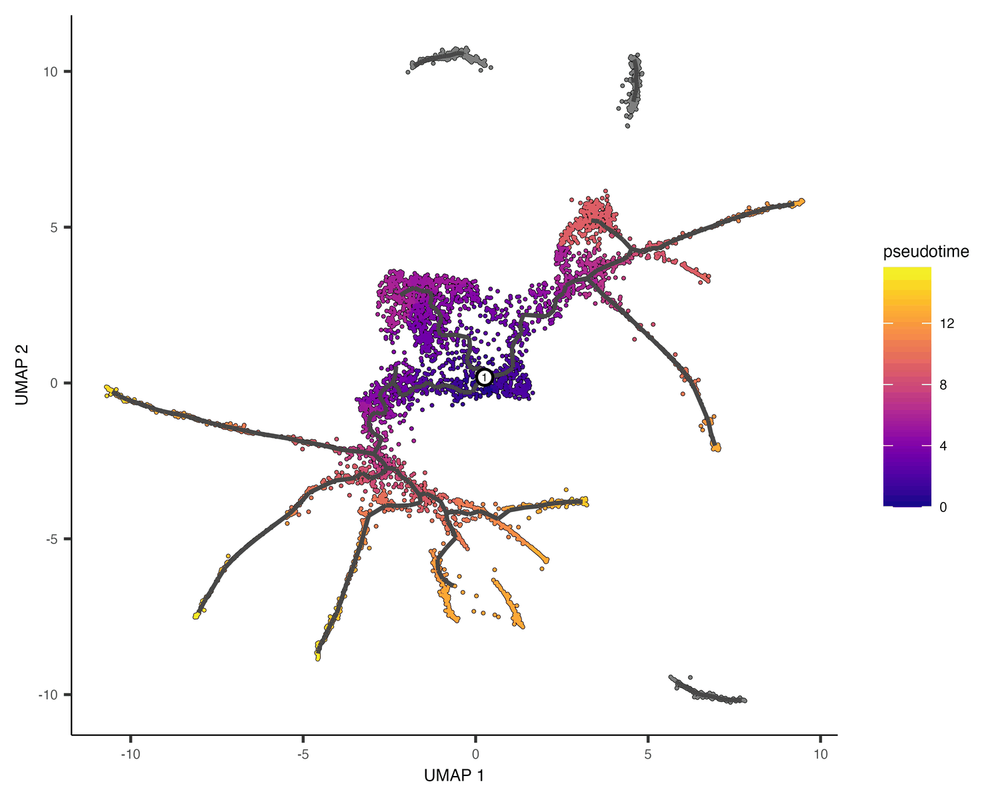

Gene expression changes in a dynamic way as cells transition from one state to another. These transitions occur during development and throughout life, which makes them of interest to understand changes in the cellular functions. In each of these states, some genes get activated and others silenced. By using scRNA-seq data, computational tools such as Monocle3 can infer the single-cell trajectories that cells undergo when transitioning across the different functional states. Thus, the developmental history (ontogeny) of differentiated cell types can be traced. This notebook will cover the key concepts and methods related to inferring cell-state trajectory and pseudotime ordering, followed by hands-on activities that illustrate the use of Monocle3, a tool devised for this purpose.
# Download a script from GitHub that configures package installation
# for R from the system's package manager (apt).
download.file("https://github.com/eddelbuettel/r2u/raw/master/inst/scripts/add_cranapt_jammy.sh",
"add_cranapt_jammy.sh")
# Grant execution permissions to the downloaded script
Sys.chmod("add_cranapt_jammy.sh", "0755")
# Execute the script to set up R package installation via apt
system("./add_cranapt_jammy.sh")
# Enable bspm (Bridge to System Package Manager), which allows installing R packages from the system’s package manager
bspm::enable()
# Disable version checking for bspm to prevent compatibility issues
options(bspm.version.check=FALSE)
# Remove the script after execution to keep the environment clean
system("rm add_cranapt_jammy.sh")
We will create an R function to performs system calls
# Define a function to execute shell commands and capture their output
shell_call <- function(command, ...) {
# Execute the command in the system shell and capture the output
result <- system(command, intern = TRUE, ...)
# Print the output in a readable format
cat(paste0(result, collapse = "\n"))
}
Install required libraries
# Install the R.utils package, which provides additional utility functions for the next steps
install.packages("R.utils")
# Install specific versions of Seurat Wrappers and Seurat Data from GitHub
remotes::install_github('satijalab/seurat-wrappers@d28512f804d5fe05e6d68900ca9221020d52cf1d', upgrade=F)
remotes::install_github('satijalab/seurat-data')
# Check if BiocManager is installed; if not, install it for managing Bioconductor packages
if (!require("BiocManager", quietly = TRUE))
install.packages("BiocManager", quiet = T)
# Install additional required packages
install.packages("harmony") # Harmony for batch correction
BiocManager::install("clusterProfiler", update = T, ask=F, force=T) # For Functional Enrichment Analysis
BiocManager::install("destiny", update = F) # For Diffusion maps for single-cell data
remotes::install_github('cole-trapnell-lab/monocle3') # Install Monocle3 for trajectory inference
# Optional: Install a specific version of the Matrix package (commented out)
# install.packages("https://cran.r-project.org/src/contrib/Archive/Matrix/Matrix_1.5-3.tar.gz", repos=NULL, type="source")
Cells continuously transition between different functional states throughout development and life. During these transitions, gene expression changes dynamically—some genes become activated while others are silenced. Single-cell RNA sequencing (scRNA-seq) allows researchers to capture these dynamic changes at high resolution. Computational tools like Monocle3 use scRNA-seq data to reconstruct cellular trajectories, helping us understand how cells progress through different states over time. This approach is particularly useful in studying differentiation, disease progression, and cellular reprogramming.
In this tutorial, we will learn how to infer cellular trajectories and estimate pseudotime—a measure of the relative progression of cells along a developmental path—using Monocle3. By analyzing single-cell data, we can map how cells evolve across different functional states and identify key genes that drive these transitions.
This tutorial is inspired by and builds upon previous guides and studies that have demonstrated the power of trajectory inference in single-cell biology.

# Load the necessary libraries for single-cell RNA-seq analysis
library(monocle3) # Trajectory inference
library(Seurat) # Single-cell analysis framework
library(SeuratData) # Preprocessed single-cell datasets
library(SeuratWrappers) # Additional Seurat functionalities
library(patchwork) # Plot composition
library(harmony) # Batch effect correction
library(ggplot2) # Data visualization
Here, we load our datasets of interest to integrate multiple scRNA-seq samples.
This tutorial demonstrates how to align two groups of peripheral blood mononuclear cells (PBMCs) from Kang et al, 2017. In this experiment, PBMCs were divided into a control group and a stimulated group, where the latter was treated with interferon-beta. This stimulation led to cell type-specific changes in gene expression. As a result, when analyzing the data, cells tend to cluster not only by their biological identity (cell type) but also by their stimulation condition. This introduces a challenge in joint analysis, as differences in expression patterns can obscure the underlying similarities between the same cell types in both groups.
By integrating these datasets, we aim to correct for batch effects and condition-specific variations, allowing a more accurate comparison of the shared biological features across both groups.
# Download and install the "ifnb" dataset, which contains single-cell RNA-seq data
InstallData("ifnb")
# Load the previously installed "ifnb" dataset
LoadData("ifnb")
# Store the loaded dataset in a new variable called 'testdata'
# This allows us to modify the dataset while keeping the original one intact
testdata <- ifnb
# Ensure the Seurat object is updated to the latest format
testdata <- UpdateSeuratObject(object = testdata)
# Display an overview of the dataset using dplyr::glimpse()
testdata %>% dplyr::glimpse()
We perform the typical data processing, integration, batch correction, and clustering before running Monocle3.
# Here is the step by step processing
testdata <- Seurat::NormalizeData(testdata, verbose = FALSE) %>% # Normalize gene expression data
FindVariableFeatures(selection.method = "vst", nfeatures = 2000) %>% # Identify 2000 most variable genes
ScaleData(verbose = FALSE) %>% # Standardize and center the data
RunPCA(npcs = 30, verbose = FALSE) %>% # Perform Principal Component Analysis (PCA) with 30 components
RunHarmony("stim", plot_convergence = FALSE) %>% # Batch correction using Harmony
RunUMAP(reduction = "harmony", dims = 1:30) %>% # Perform UMAP clustering using Harmony-corrected data
FindNeighbors(reduction = "harmony", dims = 1:30) %>% # Compute nearest neighbors for clustering
FindClusters(resolution = 0.5) # Cluster cells using Louvain algorithm
# The argument 'verbose = FALSE' suppresses output messages to keep the console clean
This is how the UMAP looks like:
# Create a UMAP plot with cluster labels based on 'seurat_annotations'
scPlot <- DimPlot(testdata, label = TRUE, group.by = 'seurat_annotations')
# Display the plot
scPlot
# Optional: Save the plot as an image (commented out)
# ggsave("01-DimPlot.png", plot = scPlot, bg = "white")
To analyze cellular trajectories using Monocle3, we first need to convert our Seurat object into a format that Monocle3 can process. This is done using the as.cell_data_set() function from the SeuratWrappers package. This function transforms the Seurat object into a CellDataSet object, which serves as the input for Monocle3’s trajectory inference algorithms. Once converted, this object can be used to construct developmental trajectories, infer pseudotime, and analyze cellular state transitions.
# Convert Seurat object into a Monocle3-compatible cell_data_set (cds)
cds <- as.cell_data_set(testdata)
# Store gene names as metadata in the cell dataset
fData(cds)$gene_short_name <- rownames(fData(cds))
# Get an overview of the structure of the cell dataset (cds)
cds %>% dplyr::glimpse()
Monocle3 determines whether cells should be placed within the same trajectory or assigned to separate trajectories through its clustering algorithm. During this process, each cell is not only grouped into a cluster but also assigned to a partition, which represents distinct regions of the dataset. When constructing trajectories, Monocle3 treats each partition as a separate trajectory. In this step, we first cluster the cells using the cluster_cells() function, which identifies biologically meaningful groupings. Then, we use learn_graph() to infer the trajectory structure, allowing us to visualize and analyze the developmental pathways that cells follow.
cds <- cluster_cells(cds = cds, # Perform clustering on the cell dataset
reduction_method = "UMAP", # Use UMAP for dimensionality reduction
cluster_method = 'louvain') %>% # Apply Louvain algorithm for clustering
learn_graph(use_partition = T) # Learn the cellular trajectory graph
Next, we visualize the inferred trajectory to examine how cells are organized along developmental paths.
In the plot, black lines represent the structure of the inferred trajectory, forming a graph that connects related cells. If the graph is not fully connected, it indicates that cells in different partitions follow distinct developmental paths.
Special points within the graph are marked with numbered circles. Light gray circles at the ends of branches correspond to distinct cell fates—possible final states in the trajectory. Black circles represent branch points, where cells can follow different developmental directions.
The visualization can be customized using the label_leaves and label_branch_points arguments in plot_cells(). These options control whether cell fates and branch points are labeled in the plot. It is important to note that the numbers displayed in the circles serve only as reference markers and do not imply any specific biological meaning.
# Generate a UMAP plot showing cell clusters along with trajectory landmarks
scPlot <- plot_cells(cds,
color_cells_by = "cluster", # Color cells by cluster assignment
label_groups_by_cluster = FALSE, # Do not label clusters
label_branch_points = TRUE, # Label branch points in the trajectory
label_roots = TRUE, # Label the root cells in the trajectory
label_leaves = TRUE, # Label the leaf nodes in the trajectory
group_label_size = 5) # Set the font size for labels
# Display the plot
scPlot
# Optional: Save the plot as an image
# ggsave("02-plot_cells.png", plot = scPlot, bg = "white", width = 9, height = 9, dpi = 600)
Here we can have a more clean visualization by removing labels
# Generate a UMAP plot showing cell clusters without trajectory landmarks
scPlot <- plot_cells(cds,
color_cells_by = "cluster", # Color cells by cluster assignment
label_groups_by_cluster = FALSE, # Do not label clusters
label_branch_points = FALSE, # Do not label branch points
label_roots = FALSE, # Do not label root cells
label_leaves = FALSE, # Do not label leaf nodes
group_label_size = 5) # Set the font size for labels
# Display the plot
scPlot
# Optional: Save the plot as an image
# ggsave("03-plot_cells.png", plot = scPlot, bg = "white", width = 9, height = 9, dpi = 600)
Pseudotime estimates the progression of cells through a biological process based on gene expression similarities. Monocle3 orders cells along a trajectory, assigning a pseudotime value that reflects their relative position from a defined starting point. Cells closer to the root have lower pseudotime values, while those further along the path have higher values, indicating more advanced states. This helps model differentiation and identify key regulatory changes over time.
Monocle3 orders cells along a learned trajectory using pseudotime, which represents an abstract measure of progress. Pseudotime is determined by the distance between a cell and the trajectory's starting point, measured along the shortest path. The trajectory's length corresponds to the total transcriptional changes a cell undergoes from the initial to the final state.
Comparing the annotated UMAP and the Monocle3 trajectory, we can define which Monocle3 clusters are the roots for inferring differentiation:
# Set plot size (optional)
# options(repr.plot.height = 9, repr.plot.width = 16)
# Create a UMAP plot with cluster annotations from Seurat
gumap <- DimPlot(testdata, label = TRUE, group.by = 'seurat_annotations')
# Create a Monocle3 plot showing clusters without trajectory landmarks
gcluster <- plot_cells(cds,
color_cells_by = "cluster",
label_groups_by_cluster = FALSE,
label_branch_points = FALSE,
label_roots = FALSE,
label_leaves = FALSE,
group_label_size = 5)
# Combine both plots into a single figure
scPlot <- gumap + gcluster + theme(aspect.ratio = 1)
# Display the combined plot
scPlot
# Optional: Save the plot as an image
# ggsave("04-DimPlot-plot_cells.png", plot = scPlot, bg = "white", width = 18, height = 9, dpi = 600)
Then, using the following command, we can select root cells or starting states in the trajectory and infer the pseudotime for each of the other cells.
# Assign a pseudotemporal order to cells using specific clusters as root cells
cds <- order_cells(cds,
reduction_method = "UMAP", # Use UMAP for trajectory inference
root_cells = colnames(cds[, clusters(cds) %in% c(3, 15, 9, 22)])) # Specify root clusters
# Set plot size (optional)
options(repr.plot.height = 7, repr.plot.width = 7)
# Generate a UMAP plot with cells colored by pseudotime
scPlot1 <- plot_cells(cds,
color_cells_by = "pseudotime", # Color cells based on their pseudotime
label_groups_by_cluster = FALSE,
label_branch_points = FALSE,
label_roots = FALSE,
label_leaves = FALSE,
group_label_size = 5)
# Display the plot
scPlot1
# Save the plot as an image
ggsave("05-plot_cells.png", plot = scPlot1, bg = "white", width = 9, height = 9, dpi = 600)
A joint UMAP representation of the Seurat Clusters, Trajectory, and Pseudotimes.
# Set plot size (optional)
# options(repr.plot.height=6, repr.plot.width=16)
# Combine previous plots (Seurat UMAP, Monocle3 clusters, and pseudotime)
scPlot <- gumap + gcluster + scPlot1
# Display the combined figure
scPlot
# Save the combined plot as an image
ggsave("06-Multiple_plots.png", plot = scPlot, bg = "white", width = 27, height = 9, dpi = 600)
We can order the seurat clusters by the pseudotimes they are associated with.
# Set plot size (optional)
# options(repr.plot.height=7, repr.plot.width=7)
# Extract pseudotime values from Monocle3
cds$monocle3_pseudotime <- pseudotime(cds)
# Convert cell metadata into a dataframe
data.pseudo <- as.data.frame(colData(cds))
# Generate a boxplot showing pseudotime distribution across cell types
scPlot <- ggplot(data.pseudo, aes(monocle3_pseudotime,
reorder(seurat_annotations, monocle3_pseudotime), # Order by pseudotime
fill = seurat_annotations)) + # Color by cell type
geom_boxplot() # Create boxplot
# Display the boxplot
scPlot
# Optional: Save the plot as an image
# ggsave("07-boxplot.png", plot = scPlot, bg = "white")
Finally, we can inspect how gene expression of a few genes changes across pseudotimes.
# Extract expression data for selected genes (CD44 and CXCL2)
cds_subset <- cds[c('CD44', 'CXCL2'), ]
# Generate a plot showing expression of selected genes across pseudotime
scPlot <- plot_genes_in_pseudotime(cds_subset)
# Display the plot
scPlot
# Optional: Save the plot as an image
# ggsave("08-genes_in_pseudotime.png", plot = scPlot, bg = "white")
# The code below identifies genes that change their expression over pseudotime.
# However, running this can be time-consuming.
# cds_pr_test_res <- graph_test(cds, neighbor_graph="principal_graph", cores=4) # Perform differential expression analysis
# pr_deg_ids <- row.names(subset(cds_pr_test_res, q_value < 0.05)) # Select significant genes based on q-value